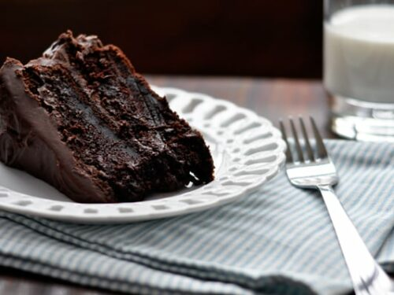
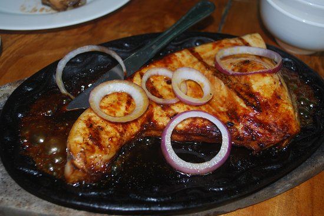
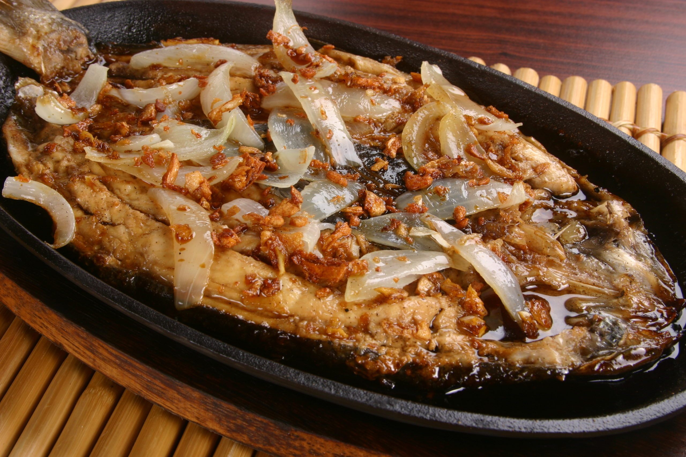
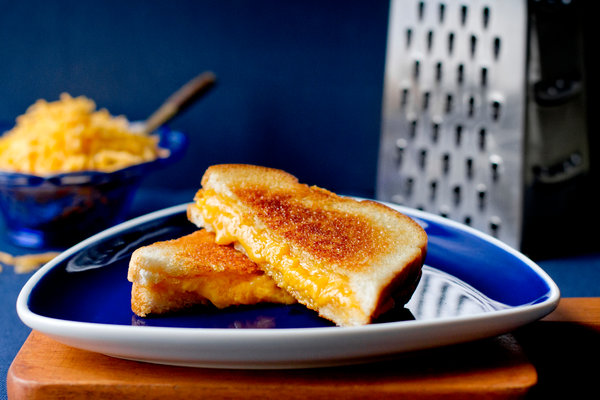
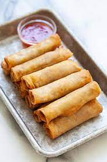

My Top 10 Favorite Foods
butterchicken

Butter chicken is A mild curry in which marinaded chicken tikkas are cooked in butter with a makhani sauce.
chickencurry

Indian curry is usually regarded as a British fusion, and it typically includes masalas, which are a blend of toasted spices pounded into a powder. Water or broth is used to make these curries, which are occasionally thickened with yogurt or sour cream.
Fried chicken

Fried chicken, often known as Southern fried chicken, is a dish made of chicken pieces that have been pan-fried, deep-fried, pressure-fried, or air-fried after being coated in seasoned flour or batter.
Chocolatecake
3 layered chocolate cake from calea is one of the most famous cakes in bacolod.
bluemarlin
Blue Marlin in Garlic Soy Butter Sauce is a delectable fish recipe that is both nutritious and flavorful.
bangus
This is a very tangy and delicious dish that anyone can prepare easily. It goes well with a soy sauce dip and rice.
grilledcheese
A grilled cheese sandwich is a warm sandwich made by sandwiching one or more slices of cheese between two slices of bread.
tinola

Tinola is a Filipino soup that is commonly served with white rice as a main course. This meal is traditionally prepared with chicken or fish, chayote wedges, and siling labuyo chili pepper leaves in a broth seasoned with ginger, onions, and fish sauce.
pizza

Pizza is an Italian dish made up of a flattened disk of bread dough covered with a variety of ingredients such as olive oil, oregano, tomato, olives, mozzarella or other cheese,
Lumpia
Lumpia refers to a variety of spring rolls popular in Indonesia and the Philippines. Lumpia wrappers are formed of a thin paper-like or crepe-like pastry skin that encases savory or sweet fillings. It's frequently offered as an appetizer or a snack.